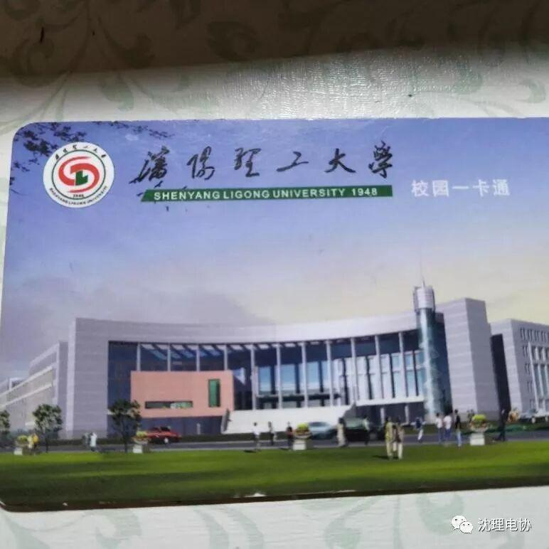
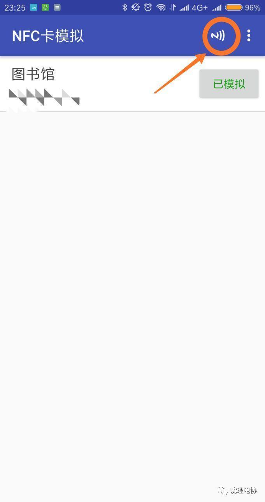
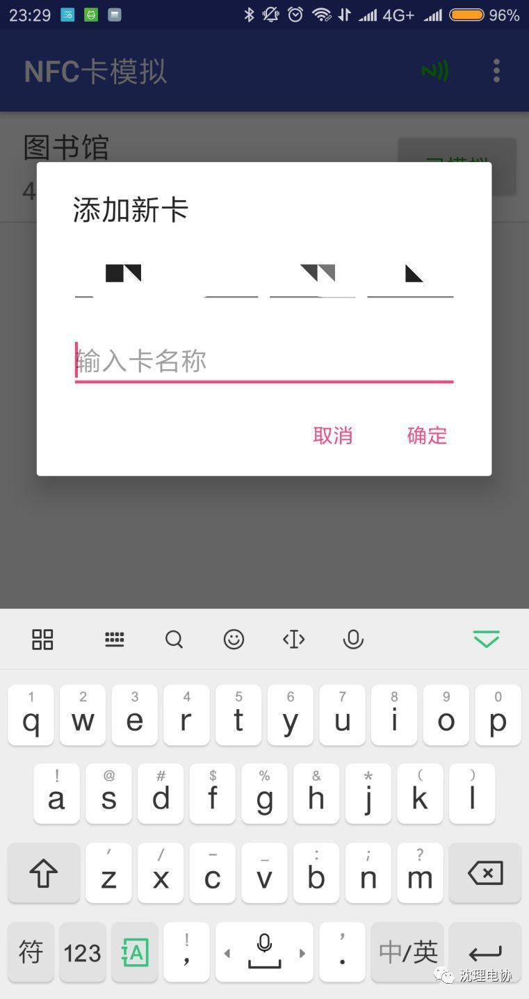

（干货）能够替代微信与支付宝的支付方式
在沈理比微信和支付宝更快的支付方式
Emmmm卖完关子还是要说实话的。
诺，沈理最快的支付方式就是它。

呵呵呵呵呵呵呵呵。。。
没错，我是认真的！
作为一篇认真的技术推送肯定不能干这么不靠谱的推荐。我们一定要更炫酷一些。比如把校园卡和手机融合在一起，怎么融合?方式有很多，比如用热熔胶粘上，比如塞在手机壳里。当然我们今天要介绍一种比较有科技含量的方法，只为了那一毫米厚度的执着。
（滑稽脸）
其实可以用手机的NFC代替校园卡完成支付，也就是说以后支付可以直接刷手机，只需要一秒钟轻松支付。Apple pay的既视感。
咳咳，敲黑板，划重点了
学校的校园卡是射频ID卡，可以直接通过读取卡片的号码进行支付。手机NFC的功能可以用来模拟一张校园卡，从而食堂支付，进图书馆，无所不能。妈妈再也不用担心我去图书馆忘了带卡了。
首先你要确定自己的手机是否有NFC功能，还有就是只能是安卓手机。有点遗憾。满足如上两个条件就可以和我一步一步把自己的手机附带校园卡属性了。
1.手机需要获取root权限，对于玩安卓的老手这个应该不是什么难事，但是还是想简单介绍一下，网上有很多一键root工具，比如root大师，百度一键root，360一键root，Kingroot，如果不能一键root可以百度搜索自“手机型号+root”。
2.Root之后你需要下载一个软件，也就是本次的主角，下载地址：https://www.coolapk.com/apk/com.yuanwofei.cardemulator 。
3.下载之后打开界面

4.点击这个按钮然后把你的卡贴到手机的背面

随便输入一个名称，点确认。
最后点击你卡片右边那个模拟的按钮，ok，吃饭付款，进出图书馆，都在抬手一挥间。怎么样，想想以后在食堂刷卡直接拿手机往机器上一贴就完成支付，是不是超级酷。
作者| 沈理电协—信息部
编辑| 刘 聪